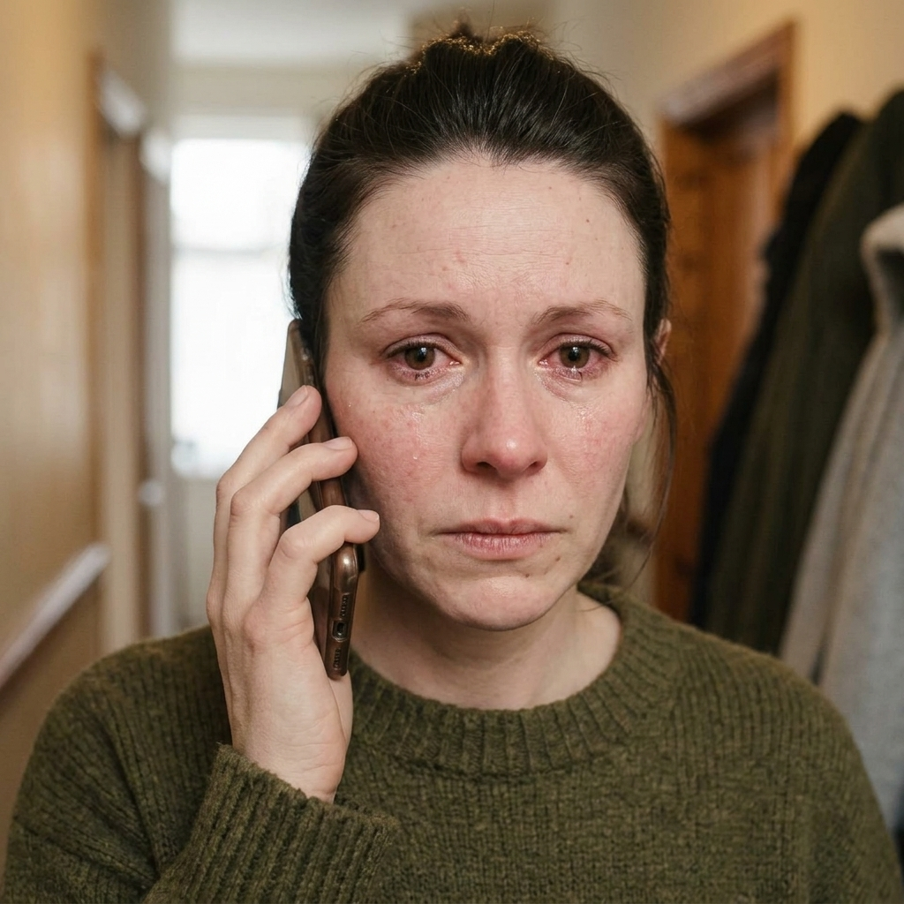

Phase 1: Concrete Experience • Three Opening Encounters

Call 01
Brenda • Weight Management
Unsolicited Outreach Flag
Tap to Load

Call 02
David • Multimorbidity (LTC)
Care Coordinator Suspicion
Tap to Load
Active Encounter
00:00 / 00:09
Patient Pushback:
"Look... I'm not interested. My weight is my business. I don't know why you're calling me out of the blue, just take my name off whatever list you're looking at."
Click play to hear vocal cadence
What is your immediate gut reaction?
Reflex:

Call 03
Gemma • Lifestyle Audit
Humiliation & Identity Crack
Tap to Load